Explore a Cyberpunk Gallery. Discover sleek vehicles
amid rain-soaked darkness, each illuminated by vibrant
neon hues against a purple-black sky. Dive into a world
where cars dance amidst atmospheric clouds, showcasing
the electric allure of cyberpunk aesthetics.
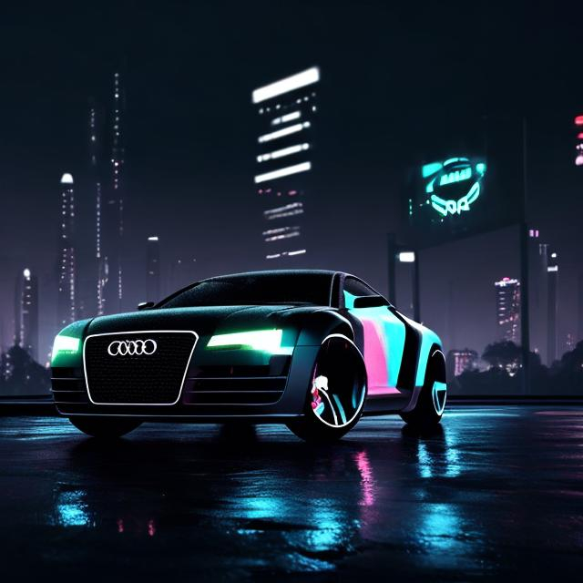
A dark Audi parked in the rain
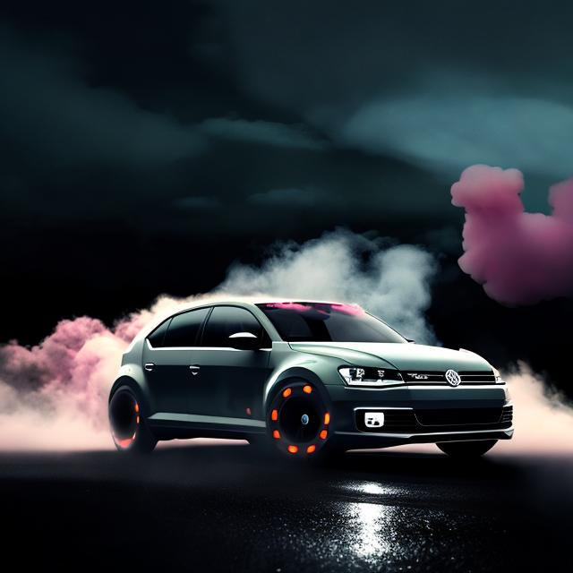
A Volkswagen drifting in the rain
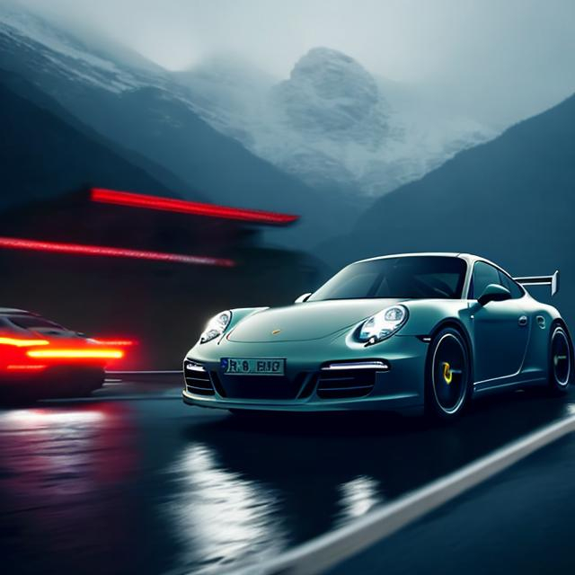
Porsche racing cars through the mountains
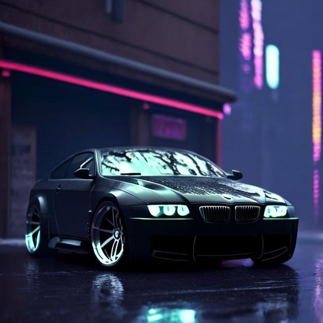
BMW parked sideways in the rain
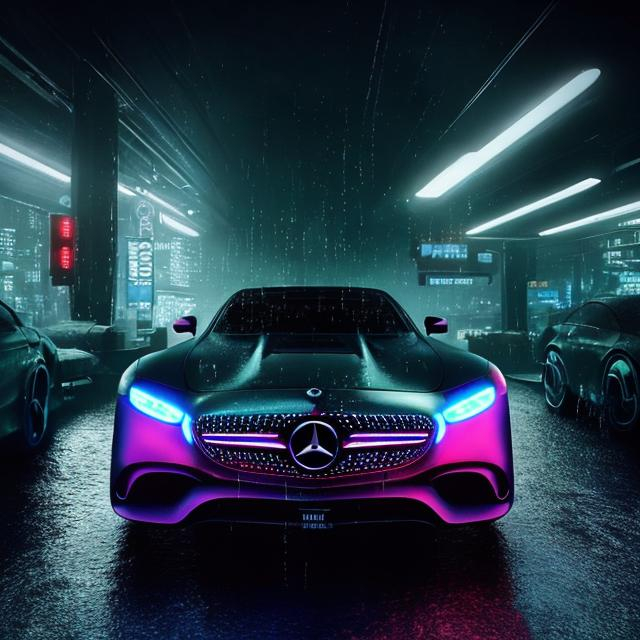
Mercedes parked in a parking lot with lights
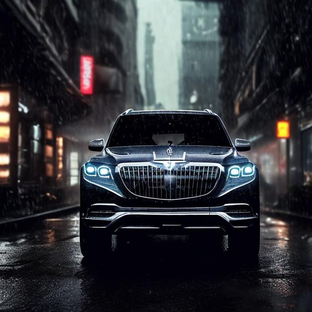
Maybach Mercedes on a Dark road
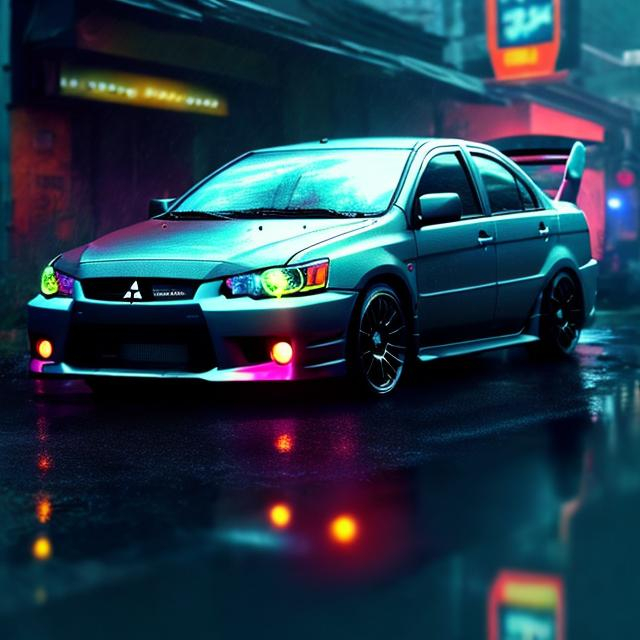
Mitsubishi Lancer on a rainy road
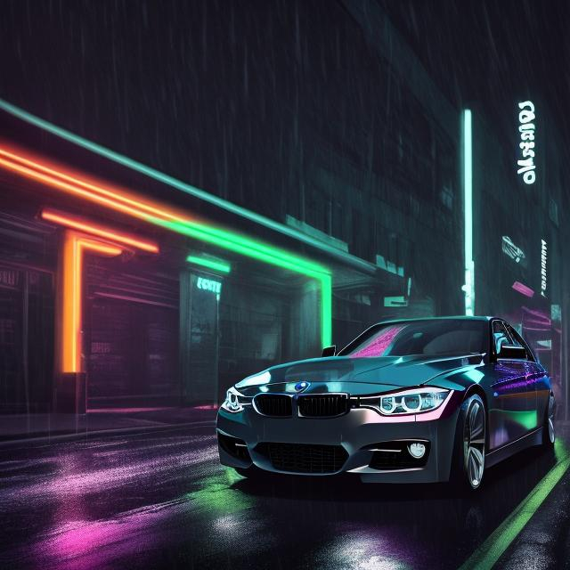
A BMW racing down a street
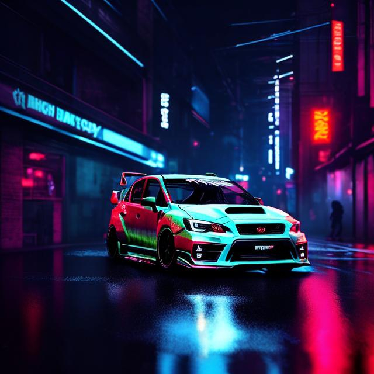
Subaru STI parked in the rain at night
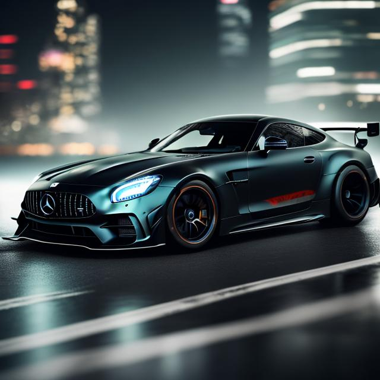
Mercedes GT R racing on a rainy highway
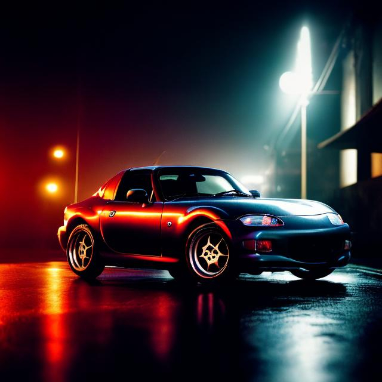
Mazda Miata on a rainy residential road
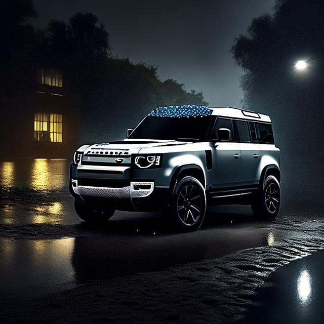
Range Rover Defender parked on a driveway